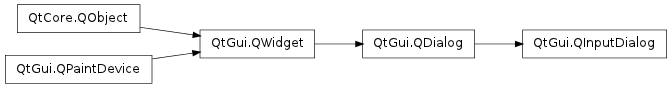

QInputDialog ¶

Synopsis ¶
Functions ¶
- def cancelButtonText ()
- def comboBoxItems ()
- def doubleDecimals ()
- def doubleMaximum ()
- def doubleMinimum ()
- def doubleValue ()
- def inputMode ()
- def intMaximum ()
- def intMinimum ()
- def intStep ()
- def intValue ()
- def isComboBoxEditable ()
- def labelText ()
- def okButtonText ()
- def open (receiver, member)
- def setCancelButtonText (text)
- def setComboBoxEditable (editable)
- def setComboBoxItems (items)
- def setDoubleDecimals (decimals)
- def setDoubleMaximum (max)
- def setDoubleMinimum (min)
- def setDoubleRange (min, max)
- def setDoubleValue (value)
- def setInputMode (mode)
- def setIntMaximum (max)
- def setIntMinimum (min)
- def setIntRange (min, max)
- def setIntStep (step)
- def setIntValue (value)
- def setLabelText (text)
- def setOkButtonText (text)
- def setOption (option[, on=true])
- def setTextEchoMode (mode)
- def setTextValue (text)
- def testOption (option)
- def textEchoMode ()
- def textValue ()
Signals ¶
- def doubleValueChanged (value)
- def doubleValueSelected (value)
- def intValueChanged (value)
- def intValueSelected (value)
- def textValueChanged (text)
- def textValueSelected (text)
Static functions ¶
- def getDouble (parent, title, label[, value=0[, minValue=-2147483647[, maxValue=2147483647[, decimals=1[, flags=0]]]]])
- def getInt (parent, title, label[, value=0[, minValue=-2147483647[, maxValue=2147483647[, step=1[, flags=0]]]]])
- def getInteger (parent, title, label[, value=0[, minValue=-2147483647[, maxValue=2147483647[, step=1[, flags=0]]]]])
- def getItem (parent, title, label, items[, current=0[, editable=true[, flags=0]]])
- def getText (parent, title, label[, echo=QLineEdit.Normal[, text=”“[, flags=0]]])
Detailed Description ¶
The PySide.QtGui.QInputDialog class provides a simple convenience dialog to get a single value from the user.
The input value can be a string, a number or an item from a list. A label must be set to tell the user what they should enter.
Four static convenience functions are provided: PySide.QtGui.QInputDialog.getText() , PySide.QtGui.QInputDialog.getInt() , PySide.QtGui.QInputDialog.getDouble() , and PySide.QtGui.QInputDialog.getItem() . All the functions can be used in a similar way, for example:
text = QInputDialog::getText(self, self.tr("QInputDialog().getText()"), self.tr("User name:"), QLineEdit.Normal, QDir().home().dirName(), ok) if ok and text: textLabel.setText(text)The ok variable is set to true if the user clicks OK ; otherwise it is set to false.

The Standard Dialogs example shows how to use PySide.QtGui.QInputDialog as well as other built-in Qt dialogs.
See also
PySide.QtGui.QMessageBox Standard Dialogs Example
- class PySide.QtGui. QInputDialog ( [ parent=None [ , flags=0 ] ] ) ¶
-
Parameters: - flags – PySide.QtCore.Qt.WindowFlags
- parent – PySide.QtGui.QWidget
- PySide.QtGui.QInputDialog. InputMode ¶
-
This enum describes the different modes of input that can be selected for the dialog.
Constant Description QInputDialog.TextInput Used to input text strings. QInputDialog.IntInput Used to input integers. QInputDialog.DoubleInput Used to input floating point numbers with double precision accuracy.
- PySide.QtGui.QInputDialog. InputDialogOption ¶
-
This enum specifies various options that affect the look and feel of an input dialog.
Constant Description QInputDialog.NoButtons Don’t display OK and Cancel buttons. (Useful for “live dialogs”.) QInputDialog.UseListViewForComboBoxItems Use a PySide.QtGui.QListView rather than a non-editable PySide.QtGui.QComboBox for displaying the items set with PySide.QtGui.QInputDialog.setComboBoxItems() . See also
options() PySide.QtGui.QInputDialog.setOption() PySide.QtGui.QInputDialog.testOption()
- PySide.QtGui.QInputDialog. cancelButtonText ( ) ¶
-
Return type: unicode
- PySide.QtGui.QInputDialog. comboBoxItems ( ) ¶
-
Return type: list of strings
- PySide.QtGui.QInputDialog. doubleDecimals ( ) ¶
-
Return type: PySide.QtCore.int
- PySide.QtGui.QInputDialog. doubleMaximum ( ) ¶
-
Return type: PySide.QtCore.double
- PySide.QtGui.QInputDialog. doubleMinimum ( ) ¶
-
Return type: PySide.QtCore.double
- PySide.QtGui.QInputDialog. doubleValue ( ) ¶
-
Return type: PySide.QtCore.double
- PySide.QtGui.QInputDialog. doubleValueChanged ( value ) ¶
-
Parameters: value – PySide.QtCore.double
- PySide.QtGui.QInputDialog. doubleValueSelected ( value ) ¶
-
Parameters: value – PySide.QtCore.double
- static PySide.QtGui.QInputDialog. getDouble ( parent , title , label [ , value=0 [ , minValue=-2147483647 [ , maxValue=2147483647 [ , decimals=1 [ , flags=0 ] ] ] ] ] ) ¶
-
Parameters: - parent – PySide.QtGui.QWidget
- title – unicode
- label – unicode
- value – PySide.QtCore.double
- minValue – PySide.QtCore.double
- maxValue – PySide.QtCore.double
- decimals – PySide.QtCore.int
- flags – PySide.QtCore.Qt.WindowFlags
Return type: PySide.QtCore.double
- static PySide.QtGui.QInputDialog. getInt ( parent , title , label [ , value=0 [ , minValue=-2147483647 [ , maxValue=2147483647 [ , step=1 [ , flags=0 ] ] ] ] ] ) ¶
-
Parameters: - parent – PySide.QtGui.QWidget
- title – unicode
- label – unicode
- value – PySide.QtCore.int
- minValue – PySide.QtCore.int
- maxValue – PySide.QtCore.int
- step – PySide.QtCore.int
- flags – PySide.QtCore.Qt.WindowFlags
Return type: PySide.QtCore.int
- static PySide.QtGui.QInputDialog. getInteger ( parent , title , label [ , value=0 [ , minValue=-2147483647 [ , maxValue=2147483647 [ , step=1 [ , flags=0 ] ] ] ] ] ) ¶
-
Parameters: - parent – PySide.QtGui.QWidget
- title – unicode
- label – unicode
- value – PySide.QtCore.int
- minValue – PySide.QtCore.int
- maxValue – PySide.QtCore.int
- step – PySide.QtCore.int
- flags – PySide.QtCore.Qt.WindowFlags
Return type: PySide.QtCore.int
- static PySide.QtGui.QInputDialog. getItem ( parent , title , label , items [ , current=0 [ , editable=true [ , flags=0 ] ] ] ) ¶
-
Parameters: - parent – PySide.QtGui.QWidget
- title – unicode
- label – unicode
- items – list of strings
- current – PySide.QtCore.int
- editable – PySide.QtCore.bool
- flags – PySide.QtCore.Qt.WindowFlags
Return type: unicode
- static PySide.QtGui.QInputDialog. getText ( parent , title , label [ , echo=QLineEdit.Normal [ , text="" [ , flags=0 ] ] ] ) ¶
-
Parameters: - parent – PySide.QtGui.QWidget
- title – unicode
- label – unicode
- echo – PySide.QtGui.QLineEdit.EchoMode
- text – unicode
- flags – PySide.QtCore.Qt.WindowFlags
Return type: unicode
- PySide.QtGui.QInputDialog. inputMode ( ) ¶
-
Return type: PySide.QtGui.QInputDialog.InputMode
- PySide.QtGui.QInputDialog. intMaximum ( ) ¶
-
Return type: PySide.QtCore.int
- PySide.QtGui.QInputDialog. intMinimum ( ) ¶
-
Return type: PySide.QtCore.int
- PySide.QtGui.QInputDialog. intStep ( ) ¶
-
Return type: PySide.QtCore.int
- PySide.QtGui.QInputDialog. intValue ( ) ¶
-
Return type: PySide.QtCore.int
- PySide.QtGui.QInputDialog. intValueChanged ( value ) ¶
-
Parameters: value – PySide.QtCore.int
- PySide.QtGui.QInputDialog. intValueSelected ( value ) ¶
-
Parameters: value – PySide.QtCore.int
- PySide.QtGui.QInputDialog. isComboBoxEditable ( ) ¶
-
Return type: PySide.QtCore.bool
- PySide.QtGui.QInputDialog. labelText ( ) ¶
-
Return type: unicode
- PySide.QtGui.QInputDialog. okButtonText ( ) ¶
-
Return type: unicode
- PySide.QtGui.QInputDialog. open ( receiver , member ) ¶
-
Parameters: - receiver – PySide.QtCore.QObject
- member – str
This is an overloaded function.
This function connects one of its signals to the slot specified by receiver and member . The specific signal depends on the arguments that are specified in member . These are:
- PySide.QtGui.QInputDialog.textValueSelected() if member has a PySide.QtCore.QString for its first argument.
- PySide.QtGui.QInputDialog.intValueSelected() if member has an int for its first argument.
- PySide.QtGui.QInputDialog.doubleValueSelected() if member has a double for its first argument.
- PySide.QtGui.QDialog.accepted() if member has NO arguments.
The signal will be disconnected from the slot when the dialog is closed.
- PySide.QtGui.QInputDialog. setCancelButtonText ( text ) ¶
-
Parameters: text – unicode
- PySide.QtGui.QInputDialog. setComboBoxEditable ( editable ) ¶
-
Parameters: editable – PySide.QtCore.bool
- PySide.QtGui.QInputDialog. setComboBoxItems ( items ) ¶
-
Parameters: items – list of strings
- PySide.QtGui.QInputDialog. setDoubleDecimals ( decimals ) ¶
-
Parameters: decimals – PySide.QtCore.int
- PySide.QtGui.QInputDialog. setDoubleMaximum ( max ) ¶
-
Parameters: max – PySide.QtCore.double
- PySide.QtGui.QInputDialog. setDoubleMinimum ( min ) ¶
-
Parameters: min – PySide.QtCore.double
- PySide.QtGui.QInputDialog. setDoubleRange ( min , max ) ¶
-
Parameters: - min – PySide.QtCore.double
- max – PySide.QtCore.double
Sets the range of double precision floating point values accepted by the dialog when used in DoubleInput mode, with minimum and maximum values specified by min and max respectively.
- PySide.QtGui.QInputDialog. setDoubleValue ( value ) ¶
-
Parameters: value – PySide.QtCore.double
- PySide.QtGui.QInputDialog. setInputMode ( mode ) ¶
-
Parameters: mode – PySide.QtGui.QInputDialog.InputMode
- PySide.QtGui.QInputDialog. setIntMaximum ( max ) ¶
-
Parameters: max – PySide.QtCore.int
- PySide.QtGui.QInputDialog. setIntMinimum ( min ) ¶
-
Parameters: min – PySide.QtCore.int
- PySide.QtGui.QInputDialog. setIntRange ( min , max ) ¶
-
Parameters: - min – PySide.QtCore.int
- max – PySide.QtCore.int
Sets the range of integer values accepted by the dialog when used in IntInput mode, with minimum and maximum values specified by min and max respectively.
- PySide.QtGui.QInputDialog. setIntStep ( step ) ¶
-
Parameters: step – PySide.QtCore.int See also
- PySide.QtGui.QInputDialog. setIntValue ( value ) ¶
-
Parameters: value – PySide.QtCore.int See also
- PySide.QtGui.QInputDialog. setLabelText ( text ) ¶
-
Parameters: text – unicode
- PySide.QtGui.QInputDialog. setOkButtonText ( text ) ¶
-
Parameters: text – unicode
- PySide.QtGui.QInputDialog. setOption ( option [ , on=true ] ) ¶
-
Parameters: - option – PySide.QtGui.QInputDialog.InputDialogOption
- on – PySide.QtCore.bool
Sets the given option to be enabled if on is true; otherwise, clears the given option .
See also
options() PySide.QtGui.QInputDialog.testOption()
- PySide.QtGui.QInputDialog. setTextEchoMode ( mode ) ¶
-
Parameters: mode – PySide.QtGui.QLineEdit.EchoMode
- PySide.QtGui.QInputDialog. setTextValue ( text ) ¶
-
Parameters: text – unicode
- PySide.QtGui.QInputDialog. testOption ( option ) ¶
-
Parameters: option – PySide.QtGui.QInputDialog.InputDialogOption Return type: PySide.QtCore.bool Returns true if the given option is enabled; otherwise, returns false.
See also
options() PySide.QtGui.QInputDialog.setOption()
- PySide.QtGui.QInputDialog. textEchoMode ( ) ¶
-
Return type: PySide.QtGui.QLineEdit.EchoMode
- PySide.QtGui.QInputDialog. textValue ( ) ¶
-
Return type: unicode
- PySide.QtGui.QInputDialog. textValueChanged ( text ) ¶
-
Parameters: text – unicode
- PySide.QtGui.QInputDialog. textValueSelected ( text ) ¶
-
Parameters: text – unicode